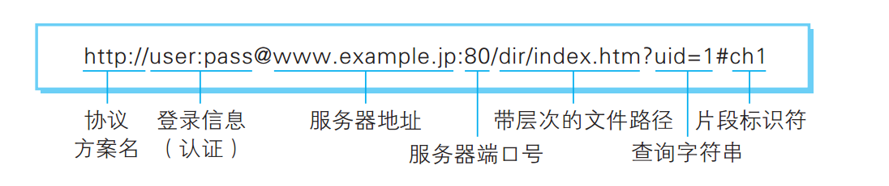

解决问题的能力
查看日志和报错信息
调试
如何搜索

全球最大的男性同性交友平台

自学能力
文档
技术点
Java core
Linux/Unix
- 虚拟机
- 了解Unix和Linux的关系，Linux家族
- 文件
- 进程
- vi/Emacs
- shell
HTTP/HTTP2
URL
HTTP请求和响应

HTTP是无状态的
工具
版本管理工具
Git(client)/Github， 码云， Gerrit(server)
建议使用命令行窗口进行来操作build工具
Code
- 代码是给机器执行的还是给人读的？
- 主要工作是写代码还是读代码？
- 你看懂你一个月之前写的代码吗？
问题
基础部分讲得太快
作业部分
看书的部分
英语部分